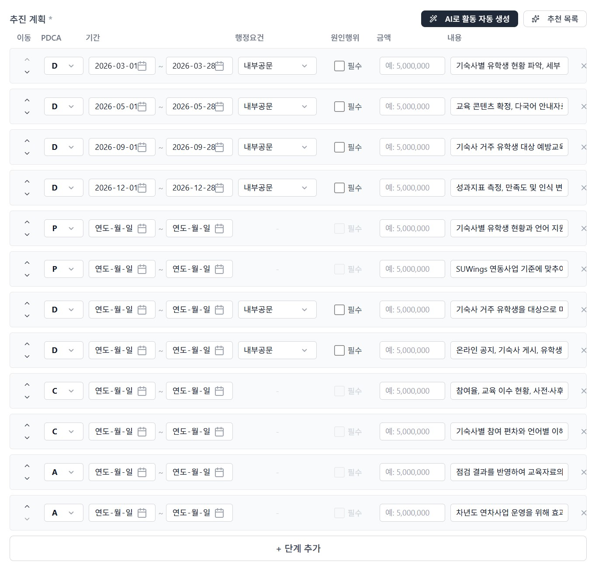
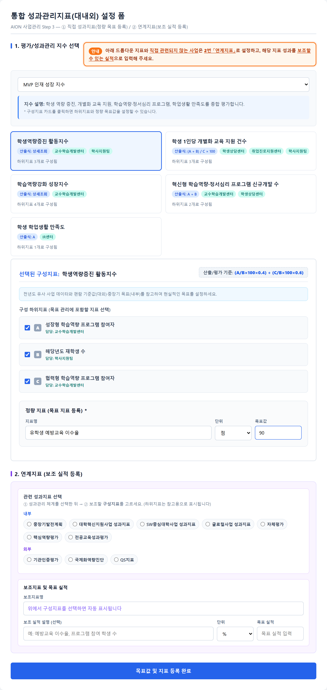
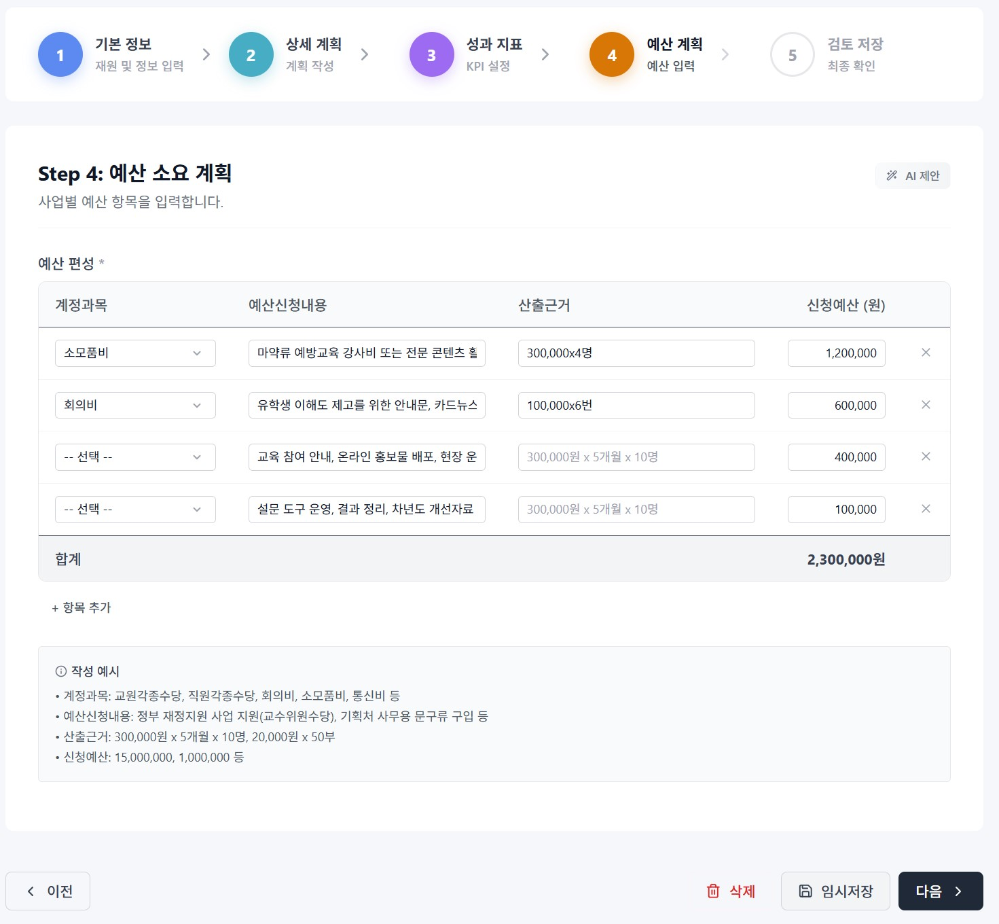

AION Briefing Session
AION 통합 성과관리 체계
설명회
사업계획 · 예산 · 성과지표를 하나로 연결하는 새로운 사업관리 방식을 안내합니다.
왜 필요한지, 무엇이 바뀌는지, 실제 화면에서 어떻게 쓰는지 순서대로 살펴봅니다.
대상 · 사업담당자 전체
소요 · 30분
[발표일자] · [발표자명]
주관 · 기획처
PART 1
왜 지금 이 시스템인가
외부 환경의 구조적 위기
내부 관리체계의 모순
실무에서 겪는 문제 3가지
무엇이 바뀌는가
PART 1 · 필요성
AION 통합 성과관리 체계
지금 대학은 이중고에 직면해 있습니다
외부에서 오는 구조적 위기와, 내부의 관행적 비효율이 동시에 커지고 있습니다.
외외부 환경의 구조적 위기
- 학령인구 감소가 실질적 재정 타격으로 이어짐
- 교육부 재정위기대학 관리 본격 시행 (2026.8.15)
— 구조조정·통폐합을 전제로 한 국가 차원의 조치
- 평가 패러다임 전환: 예산 집행률 → 핵심지표 달성도·환류(PDCA)
- 중장기 발전계획과 예산의 연계를 데이터로 증명하지 못하면 외부 재원 수주 불가
내내부 관리체계의 모순
- "전년도 진행 사업"이라는 이유로 반복되는 항례적 예산 배정
- 사업 실적과 성과지표의 인과관계 단절 — 추적·검증 불가
- 교비·국비·지자체 재원별 분절 관리 → 중복투자·투자 사각지대
- 하나의 예산사업을 여러 세부사업으로 쪼개는 중층구조 만연 → 전용·혼용, 책임 소재 불분명
결론. 관행적 예산 집행과 파편화된 사업 운영으로는 지속 가능성을 담보할 수 없습니다. 데이터·지표 기반의 사업계획과 합목적성에 입각한 예산관리로의 전환이 시급합니다.
PART 1 · 필요성
AION 통합 성과관리 체계
실무에서 실제로 겪는 문제 3가지
사업담당자가 매년 사업계획을 쓸 때 반복적으로 마주치는 현실입니다.
1타당성 검토 부재
사업의 효과성·수요자 중심성·지표 연관성을 따지지 않고, "작년에도 했으니까" 관행적으로 예산을 신청합니다.
→ 내용적 타당성이 아니라 예산액 규모 중심의 단편적 검토만 반복
2사업–지표 인과관계 단절
사업은 사업대로, 지표는 지표대로 겉돕니다. 이 사업이 어떤 지표에 얼마나 기여했는지 추적할 데이터가 없습니다.
→ 사후 검증조차 어려운 구조적 모순
3중층 사업구조
하나의 예산사업 안에 여러 세부사업을 임의로 쪼개 운영하면서 예산 전용·혼용이 심해집니다.
→ 승인받은 사업의 목적이 흐려지고 책임 소재가 사라짐
세 문제는 서로 연결되어 있습니다. 사업계획을 쓰는 시점에 지표·목표·예산을 함께 확정하지 않으면, 이후 평가·성과관리 단계에서는 되돌릴 수 없습니다.
그래서, 무엇이 바뀌나
이제부터 사업계획을 작성할 때
추진계획 · 성과지표 · 예산을
반드시 함께 입력합니다.
BEFORE
예산액 규모 중심 검토
사업과 지표를 각각 따로 관리
세부사업 임의 분할·전용
AFTER · AION
사업–지표 인과관계 필수 입력
대내외 지표를 통합 DB로 일원화
부모–자식 예산 구조로 목적 명확화
PART 2
시스템의 목적과 개요
이 시스템이 해결하려는 것 5가지
AION의 위치 — 무엇을 대체하지 않는가
PART 2 · 목적·개요
AION 통합 성과관리 체계
이 시스템의 목적 5가지
앞서 본 필요성에 따라, AION 사업관리 체계는 다음 5가지를 실현하도록 설계되었습니다.
1
사업–지표 인과관계 연결
사업계획 작성 시 성과지표와 목표값을 반드시 함께 등록
2
대내외 지표 통합 DB
중장기발전계획 12개 지수 + 기관평가인증 4개 영역을 하나로
3
직접·연계 이원화 등록
사업의 목적과 산출물을 사전에 명확히 구분
4
타당성 자기점검
산출식·기준값·전년 실적과 목표값을 비교하며 스스로 검토
5
AI 활용 기반 마련
축적 데이터로 AI 초안·성과 대시보드·환류 체계 구축
종합. 관행적인 중층 사업구조를 해체하고, 데이터 기반의 사업기획과 합목적성에 부합하는 투명한 예산관리로 체질을 개선하는 것이 최종 목적입니다.
PART 2 · 목적·개요
AION 통합 성과관리 체계
AION은 무엇을 대체하지 않는가
AION은 예산 시스템(SU-WINGS)과 결재 시스템(그룹웨어)을 대체하지 않고 연결합니다.
예산 정보가 다르면 기준은 항상 SU-WINGS
결재는 그룹웨어에서 진행 → 결과가 AION에 반영
지출청구 자체는 AION의 범위가 아님
PART 3
사업관리 구조
전체 구조 4층위
부모사업 ↔ 자식사업
성과지표 이원화 로직
PART 3 · 사업관리 구조
AION 통합 성과관리 체계
사업관리 구조, 한눈에 보기
4개 층위가 순서대로, 그리고 순환하며 맞물려 작동합니다.
1
예산 연동 구조부모(SU-WINGS)–자식(AION)→
→
→
왜 이렇게 설계했나
- 부모–자식 구조로 예산 중층화를 원천 차단
- 5단계 순서로 목적 → 방법 → 지표 → 예산이 자연히 연결
- 직접/연계 구분으로 사업의 목적성을 사전에 명확화
- PDCA 순환으로 성과가 다음 계획에 재투입되는 환류 체계 확보
오늘 설명 순서
- 이어지는 두 장에서 ①부모–자식 구조와 ③지표 이원화 로직을 조금 더 자세히
- 그다음 PART 4 사용방법에서 실제 화면으로 5단계를 처음부터 끝까지 따라갑니다
PART 3 · 사업관리 구조
AION 통합 성과관리 체계
부모사업 ↔ 자식사업 — 가장 헷갈리기 쉬운 개념
AION에서 만드는 실행 사업(자식사업)은 SU-WINGS 예산 사업(부모사업) 하나에 반드시 연결됩니다.
SU-WINGS 예산 사업 (부모)
2026000746
대학생 유학생 마약류 예방교육
◀ 연결
자식사업 A — 유학생 대상 예방교육 운영
자식사업 B — 예방교육 콘텐츠 개발
자식사업 C — 캠퍼스 안전문화 캠페인
중요. 세부사업(자식사업)별 예산 항목의 합계가 곧 부모사업의 예산 규모가 됩니다. 세부사업 예산을 느슨하게 쓰면 부모사업 전체 예산도 흔들립니다. → 앞서 본 문제 3(중층구조)의 해결책이 바로 이 구조입니다.
PART 3 · 사업관리 구조
AION 통합 성과관리 체계
성과지표 이원화 로직
모든 사업은 성과지표 등록 시, 딱 한 번 아래 질문에 답하면 됩니다.
이 사업이 대내외 성과관리 지수에 직접 기여하는가?
↙ ↘
YES → ① 직접 성과지표
성과관리 지수 선택 → 구성지표 카드 클릭 → 하위지표 체크 → 정량 목표값(지표명·단위·목표값) 등록
NO → ② 연계지표 (보조 실적)
관련 성과체계(내부/외부) 선택 → 보조할 구성지표 선택 → 보조 실적(설명·단위·목표 실적) 등록
주의. ①에 이미 직접 실적으로 올린 지표를 ②에 중복 등록하지 마세요. 간접 서포트가 분명하지 않으면 등록하지 않아도 됩니다.
PART 4
사용방법
지금부터는 실제 AION 화면을 그대로 보면서, 사업계획을 처음부터 제출까지 따라가 봅니다.
로그인 · 대시보드 · 작성방식
위자드 ①분류 → ②부모사업 → ③사업명 → ④조건 → ⑤예산 → ⑥목적 → ⑦AI생성 → ⑧편집전환
Step1~5 계획서 확인·보완
제출 → 내부공문(기획처)
PART 4 · 사용방법
AION 통합 성과관리 체계
사업계획서는 이 5단계로 작성합니다
각 단계마다 화면 상단에 아래 진행바가 항상 표시되므로, 지금 어느 단계인지 확인하며 작성하면 됩니다.
1 기본 정보분류 · 재원 · 기간
2 상세 계획개요 · 목적 · PDCA
3 성과 지표직접 · 연계 KPI
4 예산 계획계정과목별 산정
5 검토 제출제출 → 내부공문(기획처)
A시작하기
로그인 → 대시보드 → 새 사업 → 작성 방식 선택(보통 AI 위자드)
B위자드 → 5단계
분류·부모사업·사업명·조건·예산·목적 → AI초안 → Step1~5 검수·보완 · 임시저장
C제출과 그 다음
Step5 검토·제출 → 내부공문 작성 → 사업승인 결과에 따른 원인행위(해당위원회 안건제출, 내부기안) → 사업진행
임시저장 ≠ 제출. 임시저장은 중간 저장일 뿐입니다. 제출해야 승인용 내부공문(기획처) 흐름으로 넘어갑니다.
PART 4 · 사용방법
STEP 0 · 로그인
① 로그인 — 그룹웨어와 동일한 사번·비밀번호
브라우저에서 suai.cloud로 접속하면 로그인 화면이 열립니다.
실제 화면 · 로그인

- 1주소창에 https://suai.cloud 입력
- 2사번 입력 — 그룹웨어 계정과 동일합니다
- 3비밀번호 입력
- 4파란색 [로그인] 클릭 → 대시보드로 이동
이럴 때는
- 로그인 실패 시 사번·비밀번호를 다시 확인하세요.
- 계정 문의는 그룹웨어 계정 담당 부서로 문의합니다.
PART 4 · 사용방법
STEP 0 · 대시보드
② 대시보드 — 내 업무를 한눈에, 여기서 시작
로그인하면 담당사업·집행률·결재대기·일정이 한 화면에 보입니다. 새 사업은 좌측 사업관리 메뉴에서 시작합니다.
실제 화면 · 대시보드

상단 요약 카드
- 담당 사업 · 집행률 · 결재 대기 · 마감 임박 건수
주요 영역
- AI today 브리핑 — 오늘 처리할 업무 요약
- 일정 캘린더 — 업무일정 / 학사일정
- 사업현황 — 내가 맡은 사업과 진행 단계(계획 0% 등)
- 성과관리 — 실적 입력률·예산 집행률, 중점관리 대표사업
새 사업: 좌측 메뉴 사업관리 → 새 사업
PART 4 · 사용방법
STEP 0 · 작성 방식
③ 작성 방식 선택 — 세 가지 중 하나만 고르면 됩니다
처음이거나 초안이 없다면 AI 사업기획 위자드를 권장합니다.
실제 화면 · 작성 방식 선택

1 AI 사업기획 위자드 (추천)
사업 내용이 아직 정리되지 않았을 때. AI와 대화하며 분류·부모사업·사업명·조건·예산·목적을 채운 뒤 5단계 편집화면으로 넘어갑니다.
2 직접 작성
이미 사업계획 문구·예산·KPI가 정리되어 있을 때. 바로 5단계 양식으로 진입합니다.
3 기존 사업 불러오기
작년·유사 사업을 복사해 고칠 때. 연차사업에 유리합니다.
PART 4 · 사용방법
위자드 1단계 · 사업분류
④ 위자드 진입 → 가장 먼저 사업분류(C1~C5)
AI가 "좌측에서 사업 분류를 선택해 주세요"라고 안내합니다. 분류를 고르기 전에는 다음 단계로 진행되지 않습니다.
실제 화면 · AI 위자드 진입

화면 세 칸의 역할
- 왼쪽 — 사업 분류 선택
- 가운데 — AI 대화창
- 오른쪽 — 진행상태 ①분류 → ②부모사업 → ③사업명 → ④조건 → ⑤예산 → ⑥목적 → ⑦AI생성 → ⑧편집전환
C1~C5는 무엇인가
- C1 대상(내부·외부 주체)
- C2 환경 및 지역 특성
- C3 시점 및 주기
- C4 목적(정책·지표 방어)
- C5 사업 방법
▶ 를 눌러 펼치고 해당되는 항목을 모두 체크합니다. 시점·목적·방법까지 맞춰두면 AI 초안과 지표 제안 품질이 좋아집니다.
PART 4 · 사용방법
위자드 2단계 · 부모사업
⑤ 부모사업 연결 — 예산의 기준을 정하는 단계
SU-WINGS 예산사업을 검색해 하나 선택합니다. 자식 사업은 부모 사업 하나에만 연결됩니다.
실제 화면 · 부모 사업 선택

- 1검색창에 사업명 또는 사업코드 입력
- 2목록에서 해당 예산사업 체크
- 3우측 하단 [선택] 클릭 → "선택 완료" 카드 표시
- 4잘못 골랐으면 카드 옆 [수정]으로 다시 선택
왜 필요한가. 부모사업을 연결해야 편성액·집행액·잔액을 이 사업에서 볼 수 있습니다. 예산의 최종 기준은 항상 SU-WINGS입니다.
PART 4 · 사용방법
위자드 3단계 · 사업명
⑥ 사업명 정하기 — 제안 선택 또는 직접 입력
부모사업 선택 직후, AI가 사업명을 고르거나 직접 입력하라고 안내합니다.
실제 화면 · 위자드 사업명

- 1AI 안내: 「사업명을 선택하거나 직접 입력해 주세요.」
- 2제안된 이름 카드를 고르거나, 입력칸에 직접 작성 후 [전송]
- 3부모사업명과 같게 쓰거나, 실행 단위에 맞게 더 구체적인 이름으로 바꿀 수 있습니다
- 4확정 후 바꾸려면 카드 옆 [수정]
예시
부모와 동일: 「(국고)대학 박물관 진흥지원 사업」
실행명으로 바꾸기: 「AI 기반 대학 연구단지 모델 구축 및 운영」
PART 4 · 사용방법
위자드 4단계 · 사업 조건
⑦ 사업 조건 설정 — 재원·부서·기간·원인행위·대상
사업명이 끝나면 회색 박스에서 기본 조건을 입력합니다. 이후 Step1에도 그대로 반영됩니다.
실제 화면 · 조건 입력 폼

입력 후 요약 카드

재원 구분 *
등록금(교비), 국고, 지자체 등
PART 4 · 사용방법
위자드 5단계 · 예산 규모
⑧ 예산 규모 선택 — AI 제안 카드 또는 직접 입력
여기서는 총액 규모만 잡습니다. 계정과목별 세부 예산은 나중에 Step4에서 쪼갭니다.
실제 화면 · 예산 규모 제안

- 1AI가 제안한 카드 중 선택
보수적 · 표준 · 적극적 · 최대
- 2마음에 안 들면 [다시 제안받기]
- 3카드에 없는 금액이면 [직접 입력]
주의. 위자드에서 고른 총액은 초안입니다. Step4에서 계정과목·산출근거까지 구체화한 뒤, 부모사업 규모와 크게 어긋나지 않게 맞춥니다.
예시
보수적 2,000만 / 표준 4,000만 / 적극적 7,000만 / 최대 1억 중 선택
PART 4 · 사용방법
위자드 6~7단계 · 목적 · AI생성
⑨ 목적·방향 입력 → AI 계획서 초안 생성
핵심 목적과 연차사업 여부를 답한 뒤 [AI 계획서 생성 시작]을 누르면, 개요·추진계획·성과지표·예산 초안이 만들어집니다.
실제 화면 · 목적 입력 · AI 생성

- 6목적·방향 — AI 제안 중 고르거나 직접 입력
연차사업 여부도 함께 답합니다
- 7[AI 계획서 생성 시작] 클릭
개요 · 추진계획 · 성과지표 · 예산 초안이 생성됩니다
- 8생성이 끝나면 5단계 편집 화면으로 전환됩니다
AI는 초안입니다. 사업명·KPI·예산·본문은 담당자가 반드시 확인·수정한 뒤 제출하세요.
PART 4 · 사용방법
위자드 8단계 · 편집 전환
⑩ 편집 전환 — 이제부터는 5단계 계획서 화면
위자드에서 채운 값이 Step1~5에 미리 들어가 있습니다. 지금부터는 검수·보완이 본업입니다.
실제 화면 · 5단계 진행바 (Step1 활성)

위자드 → 5단계로 이어지는 흐름
- ①분류 ~ ⑦AI생성까지 끝 → ⑧편집 전환
- 화면 상단에 1기본정보 → 2상세계획 → 3성과지표 → 4예산 → 5검토제출 진행바 표시
여기서 하는 일
- 확인 — 부모사업·분류·사업명·기간·부서·원인행위가 위자드 입력과 같은지
- 수정 — 틀린 값·빠진 값 고치기
- 임시저장 — 중간 저장 (아직 제출 아님)
- 다음 > — Step2 상세계획으로 이동
위자드 중간에서도 오른쪽 [직접 편집]으로 이 화면으로 바로 올 수 있습니다.
PART 4 · 사용방법
STEP 1 · 기본 정보
Step 1. 기본 정보 — 위자드 값을 검수·확정
위자드 ①~⑧에서 고른 분류·사업명·재원·기간·부서 등이 자동으로 채워져 있습니다. 틀린 값·빠진 값만 고치면 됩니다.
실제 화면 · Step1 기본 정보

확인·입력 항목
- 선택된 분류 — 위자드에서 고른 C1~C5가 태그로 표시 (태그의 × 로 제거 가능)
- 사업명 * — [AI 제안] 버튼 활용 가능
- 사업 연도 / 재원 구분 * — 예: 2026년 / 지자체(혁신지원)
- 시작일 / 종료일 *
- 책임 부서 * · 사업 대상 *
- 지출원인행위 구분 * — 원인행위 필수 / 고정비(의무지출)
- 주담당자 및 부담당자 입력
연차사업 여부를 체크하고 환류 대상 사업을 선택하면, 전년도 미흡요인·성과지표 참고자료가 자동 연동됩니다.
PART 4 · 사용방법
STEP 2 · 상세 계획
Step 2. 상세 계획 — 개요 · 목적 · 추진 방법
AI가 만든 초안이 들어와 있는 경우가 많습니다. 반드시 읽고 검수한 뒤 넘어가세요.
실제 화면 · Step2 상세 계획

사업 개요 *
누가·무엇을·언제·어떻게 하는 사업인지 전체 그림. 추진 배경·필요성도 함께 작성합니다. (2~4문단)
사업 목적 *
"왜"가 아니라 무엇을 이룰지. 이 사업으로 달성하려는 상태를 작성합니다.
추진 방법 *
어떻게 실행할지(방식·절차·협업). AI가 비워두는 경우가 많으니 직접 작성해야 합니다.
오른쪽 [AI 제안]으로 초안을 받을 수 있지만, 받은 뒤 반드시 검수하세요.
PART 4 · 사용방법
STEP 2 · 추진계획(PDCA)
Step 2. 추진 계획은 PDCA로 나눠 씁니다
단순 일정 나열이 아니라, 계획(P) → 운영·시행(D) → 평가(C) → 성과·환류(A) 흐름으로 실제 업무와 기안이 보이도록 작성합니다.
P계획
사업계획 승인, 원인행위 기안, 입찰·계약 준비, 설계·범위 확정
D운영·시행
홍보·모집, 교육·프로그램 운영, 구축·개발, 시범운영
C평가
만족도 조사, 준공검사·검수, 중간점검, 성과지표(KPI) 측정
A성과·환류
성과보고회, 개선 반영, 매뉴얼 정비, 차년도 고도화 계획
실제 화면 · 추진계획 활동 행

한 행에 PDCA · 기간 · 행정요건 · 원인행위 · 금액 · 내용을 입력합니다. 같은 단계라도 활동이 다르면 행을 나눕니다.
이후 일정 변경 시 수정 가능하니, 최대한 자세하게 작성하세요. 기안·공문·위원회가 필요하면 「행정요건」·「원인행위」에 반영합니다.
PART 4 · 사용방법
STEP 3 · 성과 지표
Step 3. 성과 지표 — 화면은 크게 두 갈래
사업이 지표에 직접 기여하면 1번(직접 성과지표), 간접적으로 지원하면 2번(연계지표)에 등록합니다.
실제 화면 · Step3 전체 구성

| 경로 | 언제 쓰나 / 무엇을 등록하나 |
|---|
① 평가/성과관리
지수 선택 |
드롭다운의 대내·대외 지수와 직접 관련되는 사업
→ 구성지표·하위지표 선택 후 정량 목표값 등록 |
② 연계지표
(보조 실적) |
①의 지수와 직접 관련되지 않는 사업
→ 관련 체계·구성지표를 고르고 보조 실적 목표 등록 |
선택 가능한 지수
- 대외 — 기관평가인증 2026 편람 1~4영역 정량지표
- 내부 — 중장기발전계획 성과관리종합지수 12개 (MVP Edu-Framework 혁신 지수 등)
화면 우측 상단 주황색 안내문: 드롭다운 지표와 직접 관련되지 않는 사업은 2번 「연계지표」로 설정하세요.
PART 4 · 사용방법
STEP 3 · ① 직접 성과지표
Step 3-①. 직접 성과지표 등록 핵심
지수 → 구성지표 → 하위지표 → 정량 목표값 순서로 입력합니다.
실제 화면 · 직접 성과지표

- 1성과관리 지수 선택 — 드롭다운에서 선택
예: MVP 인재 성장 지수 → 지수 설명이 파란 박스로 표시
- 2구성지표 카드 클릭 — 사업과 맞는 카드 선택
카드에 산출식·담당부서·하위지표 개수가 표시됨
- 3하위지표 체크 — 목표 관리에 포함할 지표에 체크 (A·B·C 코드와 담당부서 확인)
- 4정량 지표 등록 * — 지표명 · 단위 · 목표값 입력
예: 유학생 예방교육 이수율 / % / 90
목표 설정 팁. 전년도 유사 사업 데이터와 편람 기준값(대외)·중장기 목표(내부)를 참고해 현실적인 목표를 잡으세요. 화면의 산출/평가 기준(예: A/B×100×0.4 + C/B×100×0.6)도 함께 확인합니다.
PART 4 · 사용방법
STEP 3 · ② 연계지표
Step 3-②. 연계지표(보조 실적) 등록 핵심
직접 실적으로 올릴 수는 없지만, 해당 지표를 간접적으로 서포트하는 사업이 사용합니다.
실제 화면 · 연계지표

- 1관련 성과지표 체계 선택
내부: 중장기발전계획 · 대학혁신지원사업 · SW중심대학 · 글로컬 · 자체평가 · 핵심역량평가 · 전공교육성과평가
외부: 기관인증평가 · 국제화역량진단 · QS지표
- 2보조할 구성지표 선택 — 체크로 하나 선택 (하위지표는 참고용 표시)
- 3보조지표명 자동 표시 — 선택한 지수·구성지표명이 자동 입력됩니다
- 4보조 실적 설명 · 단위 · 목표 실적 입력
예: 예방교육 이수율 / % / 90
주의 3가지. ① 1번에 직접 실적으로 올린 지표를 2번에 중복 등록하지 않기 ② 간접 서포트가 분명하지 않으면 등록하지 않기 ③ 국고 대표사업은 실제 핵심 과제일 때만 체크
PART 4 · 사용방법
STEP 4 · 예산 계획
Step 4. 예산 소요 계획 — 예산서를 여기서 함께 작성
예전에 SU-WINGS에서 따로 쓰던 예산서를 이 화면에서 사업계획과 함께 작성합니다. 총액이 아니라 항목별로 구체화합니다.
실제 화면 · Step4 예산 소요 계획

계정과목
교원각종수당, 직원각종수당, 회의비, 소모품비, 통신비 등
예산신청내용
정부 재정지원 사업 지원(교수위원수당), 사무용 문구류 구입 등
산출근거
300,000원 × 5개월 × 10명 / 20,000원 × 50부
신청예산(원)
15,000,000 / 1,000,000 등 — 합계가 자동 계산
기존(계속) 사업이라면 지난해 사업 지출 총금액을 기준으로 예산을 짜세요. 신규 사업은 추진계획(PDCA)·과업 규모에 맞춰 산출근거를 분명히 둡니다. 세부사업 예산의 합계가 곧 부모사업 예산 규모가 됩니다.
PART 4 · 사용방법
STEP 5 · 검토 및 제출
Step 5. 검토 및 제출 — AI 완성도 진단 후 제출
기본정보·상세계획·성과지표·예산 요약을 마지막으로 확인하고 제출합니다.
실제 화면 · Step5 검토 및 제출

- 1요약된 사업명·기간·부서·담당자가 맞는지 확인
- 2[분석 실행]으로 AI 완성도 진단(0~100점) 확인 — 점수가 낮으면 이전 Step으로 돌아가 보완
- 3상세계획·성과지표·예산 요약을 스크롤하며 확인
- 4문제 없으면 [제출] 클릭
제출 직전 마지막 점검. 결재가 시작되면 수정이 어려워집니다. 숫자(예산·KPI·기간)는 한 번 더 확인하세요.
PART 4 · 사용방법
제출 직후 · 내부공문(기획처)
제출 직후 — 내부공문(기획처)까지 이어가야 끝납니다
사업계획 "작성"은 제출로 끝나지만, 승인을 받으려면 내부공문(기획처) 결재를 올려야 합니다.
실제 화면 · 제출 완료 안내

[상세로 이동]
제출된 사업 상세 화면으로 갑니다. 내용을 다시 보거나 나중에 기안할 때 사용합니다.
[내부공문(기획처) 작성] ← 바로 결재를 올리려면 이것
사업계획 승인용 내부공문(기획처) 작성 화면으로 이동합니다. 작성 후 그룹웨어에서 결재가 진행됩니다.
결재 루프. AION에서 문서 작성 → 그룹웨어에서 결재 → 승인/반려 결과가 다시 AION 사업 상태에 반영됩니다. 반려되면 사유를 확인해 보완 후 재제출합니다.
아직 기안을 안 썼다면 사업 상세 상단에 「내부공문 작성필요」 노란 배너가 남아 있습니다.
PART 5
마무리
한 장 요약 체크리스트
자주 묻는 질문
문의처
PART 5 · 마무리
AION 통합 성과관리 체계
한 장 요약 — 사업담당자 체크리스트
오늘 살펴본 내용을 순서대로 정리하면 아래 10단계입니다.
- 1로그인한다 (그룹웨어와 동일한 사번·비밀번호)
- 2사업관리 → 새 사업 → AI 위자드를 고른다
- 3위자드: 분류(C1~C5) → 부모사업 → 사업명 → 조건 → 예산규모 → 목적 → AI생성
- 4편집 전환 후 Step1~2에서 위자드 값을 검수·보완한다
- 5추진계획을 PDCA로 자세히 나눠 쓴다
- 6Step3에서 직접/연계 지표를 구분해 등록한다
- 7Step4 예산을 계정과목·산출근거까지 산정한다
- 8Step5 제출 후 내부공문(기획처)을 올려 승인까지 받는다
자주 임시저장하세요. 그리고 제출 ≠ 승인이라는 점을 꼭 기억하세요.
PART 5 · 마무리
AION 통합 성과관리 체계
Q. 임시저장만 했는데 사업이 승인되나요?
아니요. 제출하고 내부공문(기획처) 결재 승인까지 받아야 합니다.
Q. 부모사업을 꼭 연결해야 하나요?
예. 예산·집행을 사업과 함께 보려면 SU-WINGS 예산사업을 부모로 연결해야 합니다.
Q. ①직접지표와 ②연계지표를 둘 다 등록할 수 있나요?
가능합니다. 다만 같은 지표를 두 곳에 중복해서 넣지 마세요.
Q. AI가 써 준 내용을 그대로 제출해도 되나요?
AI 결과는 초안입니다. 사실관계·예산·일정·성과지표는 담당자가 최종 확인·수정해야 합니다.
Q. 지출청구도 AION에서 끝나나요?
아닙니다. 실제 예산·청구는 SU-WINGS·그룹웨어 흐름을 따릅니다.
Q. 승인 후 예산을 크게 바꾸려면?
새 버전을 만들고 수정 내부공문(기획처)을 다시 올려야 합니다.
문의: 기획처 [내선/이메일: 3395(adventistcho@syu.ac.kr), 3396(syu9121@syu.ac.kr)]